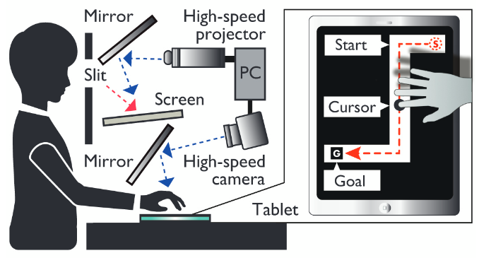
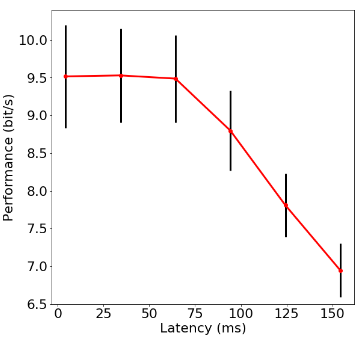

近年、ユーザーの身体運動をバーチャルリアリティ空間に投影し、直感的なインタラクションを可能にする没入型デバイスが数多く登場している。 しかし、それらのデバイスには入力と出力の間に内在的な遅延が存在し、ユーザーの視覚情報と身体感覚に時間的不整合を生じさせる。 既存研究において、自己が投射された、没入感の高い没入環境における遅延の影響は十分に調査されておらず、具体的な指標も存在しない。
そこで本研究では、高速カメラ及び高速プロジェクターを用いて、撮像から投影までの遅延時間が最小で4.3msであり、 1msの分解能で遅延時間を制御可能なシステムを開発し、鏡を用いることで身体感覚と視覚情報に遅延が生じる没入環境を構築し、 心理物理学実験を行った。その結果、本システムによって、既存では未調査の100ms以下の遅延の影響の探索を可能とした。 提案システムを用いて、フィッツの法則に基づくポインティングタスクを行い、ユーザーのパフォーマンスに与える遅延の影響を調査した。 実験結果より、遅延時間が24msを超えるとパフォーマンスが下がり始めることが明らかになった。 また、トンネル状のパスに沿って指を動かすステアリングタスクを行う場合には、遅延時間が64msを超えるとパフォーマンスが下がる結果であった。 このように、提示する映像の遅延における許容限界値を計測することを可能にした本システムは、今後のインタラクティブな没入型デバイスにおける設計や、 バーチャルリアリティを対象とした研究開発における指標として適用可能である。
|  |
|  |